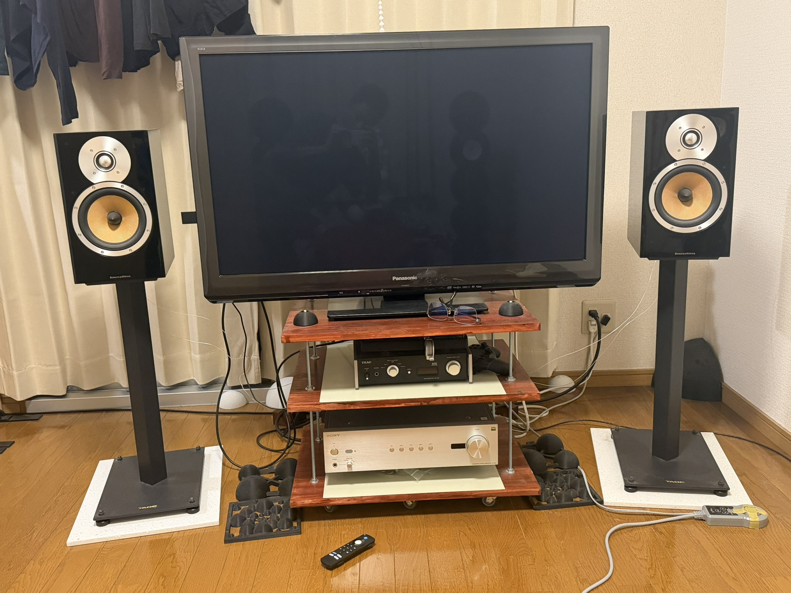
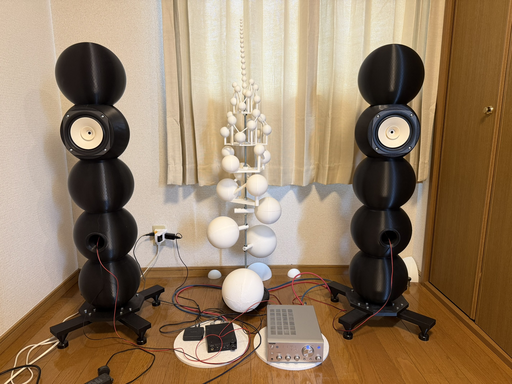
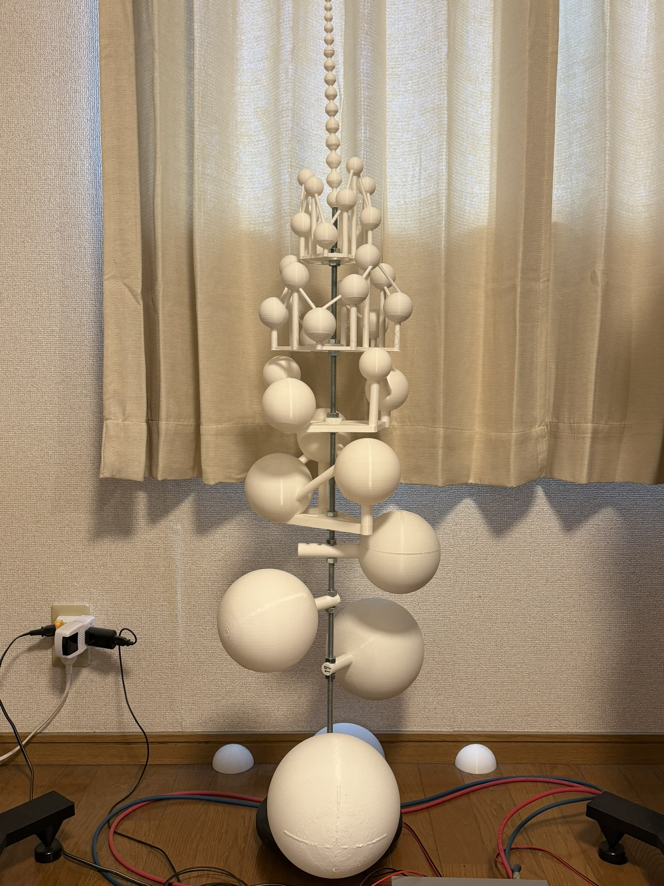

Audio Room
市販の2wayスピーカーを使用したメインシステムと、
市販のフルレンジユニットを使用し筐体を3Dプリンタで作成したサブシステムの紹介
（メインシステムとサブシステムは部屋の前後にそれぞれ設置している）
（部屋のサイズは1Kで5.75畳+キッチン2畳。アパートのため音量はかなり控えめで聞いている。）
メインシステム構成

音源の情報量をなるべく削らないことと、特定の周波数が強調されないようにセッティングすることを目標にやっている。
- テレビ: Panasonic TH-P42GT3 (プラズマテレビ42型)
視力良くないし画質より動きに強いプラズマが良い。発色も自然だし。
- スピーカー: B&W CM5
情報量多いスピーカーだし気に入ってるよ。
- スピーカースタンド: TAOC WST-C60HB
内部に鉄の粉が封入されてるから制振性に優れてるんじゃね。
- スピーカーケーブル: オヤイデ 0.8mm純銀単線 1m切り売り
銀線のメリットは銅に比べて酸化しにくく銅よりも導電性が良いところ
- アンプ: Sony TA-A1ES
大きな音で鳴らさないなら実質純A級動作するためコスパが良い
- DAC(Digital Analog Converter): TEAC UD-501
解像度はあんま高くないけど悪くはない
- XLRケーブル: オヤイデ PR-02 V2
rcaケーブルとの差はわたしには不明
サブシステム構成

音源の情報量をなるべく削らないことと、特定の周波数が強調されないようにセッティングすることを目標にやっている。
拡散パネル(ルームチューニング)
物質としてのエンクロージャー（箱）の限界に挑むため、3Dプリンタ（PLAフィラメント）を用いた自作スピーカープロジェクトを立ち上げています。 既製品には真似できない理想の曲面や内部構造を形にしています。

- 拡散パネルタワー:
全球を150度送り角で並べた拡散パネルタワー。柱は寸切ボルトで転倒防止のため、ダンベルウェイトにナットとワッシャーで固定している。
- 10mm～49mmは1mm刻み
- 50mm～110mmは10mm刻み
- 120mm～200mmは20mm刻み
- (予定)201mm～280mmは40mm刻み
なお、メインの方にもテレビの後ろに同じ物をおいている。
テレビ内蔵スピーカーがかなり立体的で高解像度になったことからすごく効果がある模様。
スピーカーとスピーカーの間に置くことでどこから壁と壁との間で反射との干渉を減らしてくれると思ってる。
- 部屋の角1/8球:
部屋の角は低音がたまるため1/8球で程よく拡散することで低音が耳に届きやすくなる。
直径340mmの1/8球と直径220mmの1/8球を対角においている。
やりすぎ注意デカすぎる1/8球を置くと低音が他の帯域をマスクして高音とか中音が引っ込む可能性あり。
← トップページに戻る